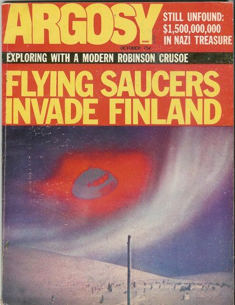

Couverture de Argosy UFO ce mois-là

Un avion cubain de construction soviétique se pose à la Nouvelle-Orléans sans être détecté. En 25 mois, c'est la 2ᵉ
fois que les radars américains ne voient rien, comme en 1969-10. Un rapport d'une commission d'enquête de la Chambre
des représentant établira l'existence de cette brèche de 2500 km dans le système de défense antiaérien américain
entre la Floride et la Californie, l'une des régions où se produisent le plus grand nombre de disparitions
mystérieuses : le fameux "Triangle de la mort". Il en coûterait 125 millions $ pour y remédier.